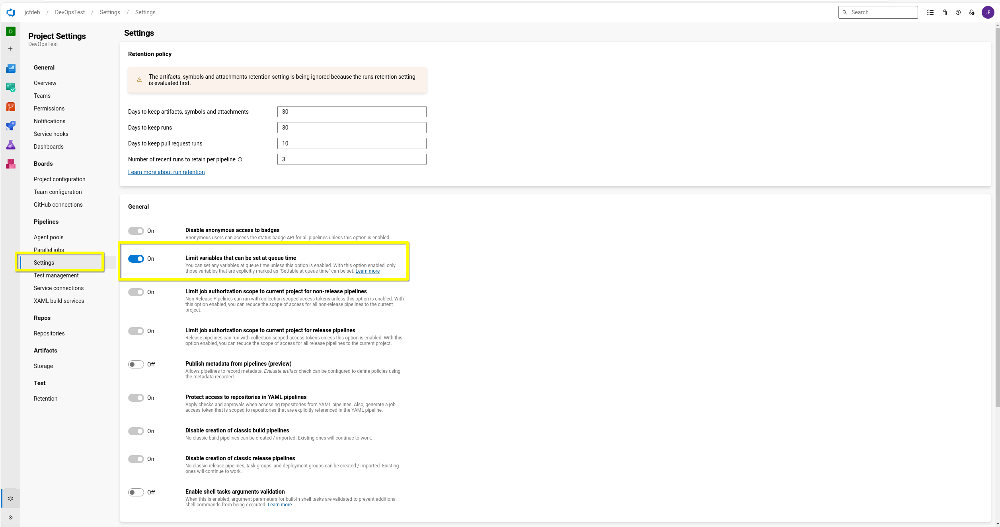
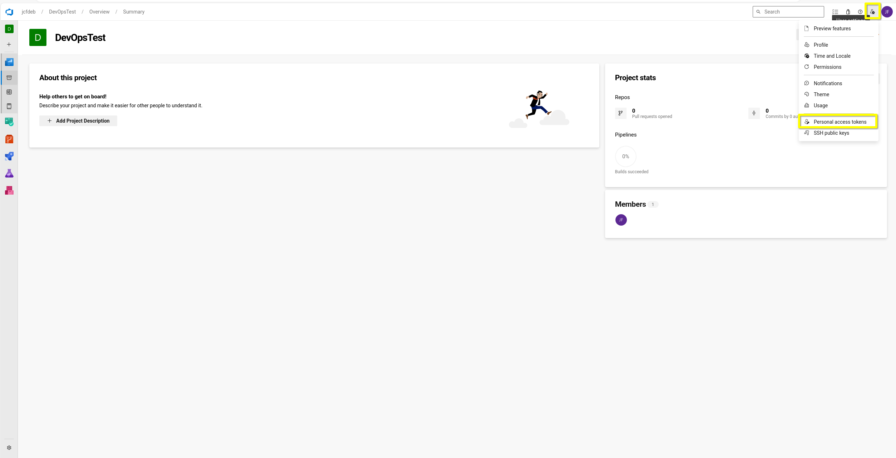
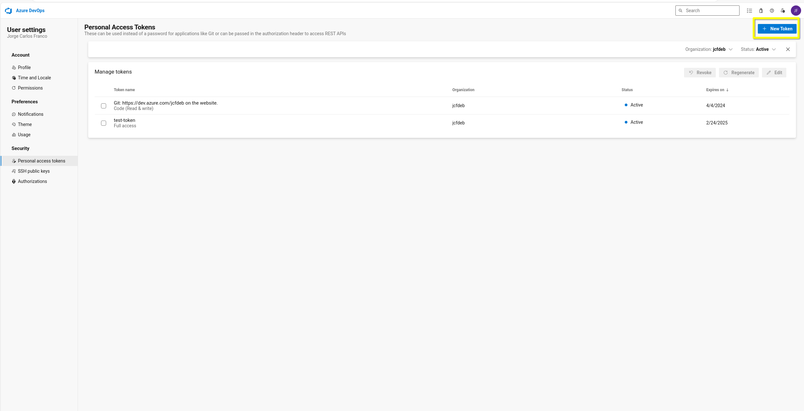
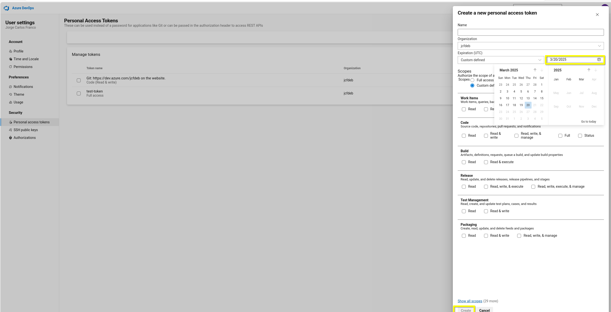

Passaggi da realizzare per la configurazione del Runner
Impostazioni Del Progetto
Per aprire la sezione della configurazione del proggetto dobbiamo dirigerci alla pagina principale del progetto per poi cliccare sul pulsante dell'ingranaggio che troviamo in basso a sinistra.
Una configurazione che ci può aiutare con il passaggio delle variabili tramite le chiamate HTTP POST è quella di 'Limit variables that can set at queue time'. LA possiamo configurare a 'On'.

Sezione: Agent Pools
In questa sezione possiamo trovare tutti gli elementi in ralazione agli agent.
La procedura si può avviare cliccando sul pulsante con la 'persona e l'ingrannaggio' in alto a destra, e poi selezionando la voce 'Personal access tokens'.

Per creare un nuovo access token dobbiamo spingere il pulsate 'New token'.

Per concludere dobbiamo 'copiare' il valore restituito (come nella maggior parte dei servizi laddove si creano access token questa sarà l'unica opportunità per reperirlo). Spingere il pulsate 'Close' per concludere.
A continuazione verranno visualizzati i comandi (e la sua uscita) utilizzati per installare l'agent per Linux.
File contenuti nell'archivio scaricato dal link fornito da Azure.
azureuser@ubuntu2204:~/myagent$ ls
bin config.sh env.sh externals license.html run-docker.sh run.sh vsts-agent-linux-x64-3.234.0.tar.gz
Installazione tramite lo script './config.sh'
azureuser@ubuntu2204:~/myagent$ ./config.sh
___ ______ _ _ _
/ _ \ | ___ (_) | (_)
/ /_\ \_____ _ _ __ ___ | |_/ /_ _ __ ___| |_ _ __ ___ ___
| _ |_ / | | | '__/ _ \ | __/| | '_ \ / _ \ | | '_ \ / _ \/ __|
| | | |/ /| |_| | | | __/ | | | | |_) | __/ | | | | | __/\__ \
\_| |_/___|\__,_|_| \___| \_| |_| .__/ \___|_|_|_| |_|\___||___/
| |
agent v3.234.0 |_| (commit 21ca259)
>> End User License Agreements:
Building sources from a TFVC repository requires accepting the Team Explorer Everywhere End User License Agreement. This step is not required for building sources from Git repositories.
A copy of the Team Explorer Everywhere license agreement can be found at:
/home/azureuser/myagent/license.html
Enter (Y/N) Accept the Team Explorer Everywhere license agreement now? (press enter for N) > Y
>> Connect:
Enter server URL > https://dev.azure.com/jcfdeb
Enter authentication type (press enter for PAT) >
Enter personal access token > ****************************************************
Connecting to server ...
>> Register Agent:
Enter agent pool (press enter for default) >
Enter agent name (press enter for ubuntu2204) >
Scanning for tool capabilities.
Connecting to the server.
Successfully added the agent
Testing agent connection.
Enter work folder (press enter for _work) >
2024-02-26 15:16:02Z: Settings Saved.
# Trigger by curl
#
You
How I can trigger the Azure DevOps Pipeline thruogh Curl?
Copilot
Certainly! To trigger an Azure DevOps Pipeline using cURL, follow these steps:
First, make sure you have a Personal Access Token (PAT) for authentication. You can create one in your Azure DevOps organization.
Construct your cURL command. You’ll need the following information:
Organization: Your Azure DevOps organization name.
Project: The project where your pipeline resides.
Pipeline ID: The unique identifier for your pipeline.
PAT Token: Encode your PAT in base64 and include it in the request header.
Use the following cURL command to queue the build:
YOUR_PAT_TOKEN_ENCODED_IN_BASE64=...
AZURE_ORGANIZATION=...
AZURE_PROJECT=...
PIPELINE_ID=...
FULL_GIT_SHA=... # Optional: If you want to override the default sourceVersion
curl --location \\
--request POST 'https://dev.azure.com/$AZURE_ORGANIZATION/$AZURE_PROJECT/_apis/build/builds?api-version=7.1-preview.7' \\
--header 'Authorization: Basic $YOUR_PAT_TOKEN_ENCODED_IN_BASE64' \\
--header 'Content-Type: application/json' \\
--data-raw '{
"definition": {
"id": "$PIPELINE_ID"
},
"sourceVersion": "$FULL_GIT_SHA", # Optional: only if you want to override the default sourceVersion
"parameters": "{\"your.parameter\": \"your value\"}" # Yes, this is a stringified JSON inside a stringified JSON
}'
Replace the placeholders (YOUR_PAT_TOKEN_ENCODED_IN_BASE64, AZURE_ORGANIZATION, AZURE_PROJECT, PIPELINE_ID, and FULL_GIT_SHA) with your actual values.
Remember to adjust the parameters according to your specific use case. Happy automating! 🚀